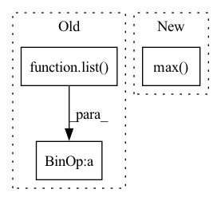

Pattern ID :36765

Before Change
_output = self._model.pool(feats)
_output = self._model.flatten(_output)
_output = self._model.classifier(_output)
grad: torch.FloatTensor = list(torch.autograd.grad(_output[:, _class], feats))[0] // (N,C,H,W)
feats.requires_grad_(False)
weights: torch.FloatTensor = grad.mean(axis=-1, keepdim=True).mean(axis=-1, keepdim=True) // (N,C,1,1)
heatmap: torch.FloatTensor = (feats * weights).sum(dim=1).clamp(0) // (N,H,W)
heatmap = np.array(heatmap.cpu())
heatmap = cv2.resize(heatmap[0], _input.shape[2:])
heatmap = heatmap - np.min(heatmap)
heatmap = heatmap / np.max(heatmap)
return heatmap
After Change
weights: torch.FloatTensor = grad.mean(dim=-2, keepdim=True).mean(dim=-1, keepdim=True) // (N,C,1,1)
heatmap: torch.FloatTensor = (feats * weights).sum(dim=1).clamp(0) // (N,H,W)
heatmap.sub_(heatmap.min(dim=-2, keepdim=True)[0].min(dim=-1, keepdim=True)[0])
heatmap.div_(heatmap.max(dim=-2, keepdim=True)[0].max(dim=-1, keepdim=True)[0])
heatmap = (to_numpy(heatmap).transpose(1, 2, 0) * 255).astype(np.uint8)
heatmap = cv2.resize(heatmap, dsize=_input.shape[-2:], interpolation=cv2.INTER_CUBIC)
In pattern: SUPERPATTERN
Frequency: 4
Non-data size: 3
Instances
Fragment ID: 104838655
Project Name: ain-soph/trojanzoo
Commit Name: 2bf7c2a2e8acba2592ee17d60d1a59b7bd1bbfe5
Time: 2020-11-24
Author: ain-soph@live.com
File Name: trojanzoo/model/imagemodel.py
M Class Name: ImageModel
N Class Name: ImageModel
M Method Name: grad_cam(3)
N Method Name: grad_cam(3)
M Parent Class: Model
N Parent Class: Model
M File Name: trojanzoo/model/imagemodel.py
N File Name: trojanzoo/model/imagemodel.py
M Start Line: 206
M End Line: 222
N Start Line: 190
N End Line: 212
'>
Before Change
except:
fs = ""
print("Model Summary: %g layers, %g parameters, %g gradients%s" % (len(list(model.parameters())), n_p, n_g, fs))
def load_classifier(name="resnet101", n=2):
After Change
try: // FLOPs
from thop import profile
stride = max(int(model.stride.max()), 32) if hasattr(
model, "stride") else 32
img = torch.zeros((1, model.yaml.get("ch", 3), stride, stride), device=next(
model.parameters()).device) // input
'>
Fragment ID: 104838653
Project Name: lannguyen0910/food-recognition
Commit Name: b5735ec3f41b2fda4cb3de7a336b0a90cfdab34a
Time: 2022-01-31
Author: 18120051@student.hcmus.edu.vn
File Name: models/utils/torch_utils.py
M Class Name: AnonimousClass
N Class Name: AnonimousClass
M Method Name: model_info(3)
N Method Name: model_info(2)
M Parent Class:
N Parent Class:
M File Name: models/utils/torch_utils.py
N File Name: models/utils/torch_utils.py
M Start Line: 129
M End Line: 145
N Start Line: 135
N End Line: 158
'>
Before Change
def calc_bandwidth(kernel, kernel_num=10, max_scale=2, min_scale=0.1):
// * kernel: [batch_size, particle_num, particle_num]
kernel_mean = kernel.mean(-1).max(-1)[0]
scale_list = list(np.linspace(min_scale, max_scale, kernel_num))
bandwidth_list = [(kernel_mean * scale).view(-1, 1, 1).detach() for scale in scale_list]
return bandwidth_list
After Change
seq_len = set2.size(0)
set1_centre = set1.mean(-1).view(-1, 1)
set2_centre = set2.mean(-1).view(1, -1)
distance = (set1_centre - set2_centre).pow(2).pow(0.5).max(-1)[0].max(-1)[0]
delta_list = [distance / np.sqrt(2 * (i + 1)) for i in range(kernel_num)]
bandwidth_list = [((2 * delta ** 2)).detach() for delta in delta_list]
return bandwidth_list
'>
Fragment ID: 104838660
Project Name: deligentfool/dqn_zoo
Commit Name: 23f02caeca29f856c16efb0b1f26b0bfbf15efe9
Time: 2020-10-28
Author: 1027660817@qq.com
File Name: MMD_DQN/mmd_dqn.py
M Class Name: AnonimousClass
N Class Name: AnonimousClass
M Method Name: calc_bandwidth(3)
N Method Name: calc_bandwidth(4)
M Parent Class:
N Parent Class:
M File Name: MMD_DQN/mmd_dqn.py
N File Name: MMD_DQN/mmd_dqn.py
M Start Line: 10
M End Line: 14
N Start Line: 32
N End Line: 39